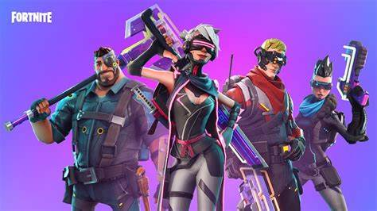
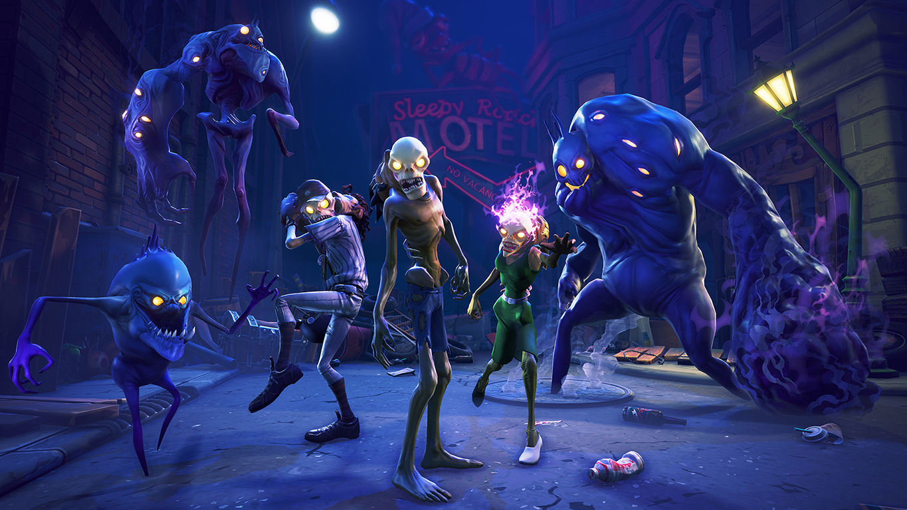
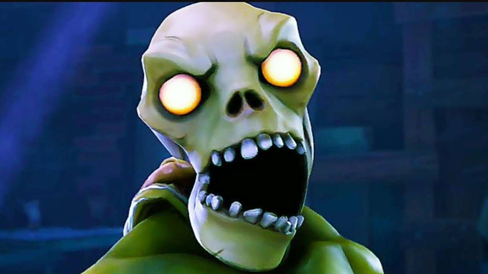
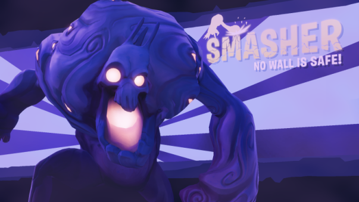
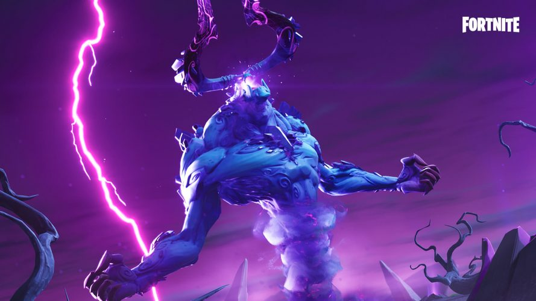
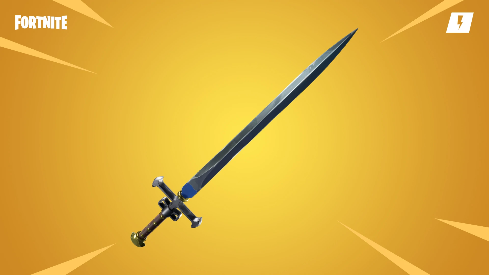
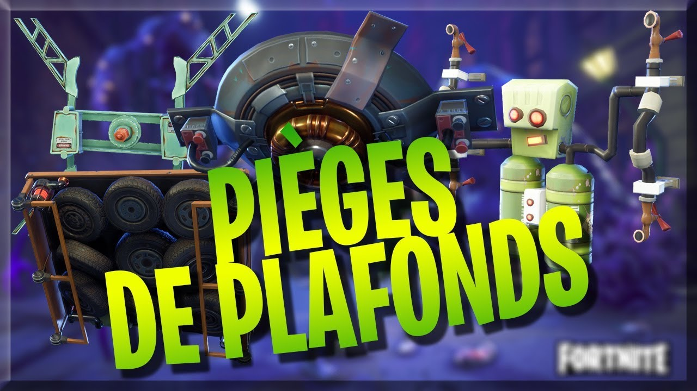
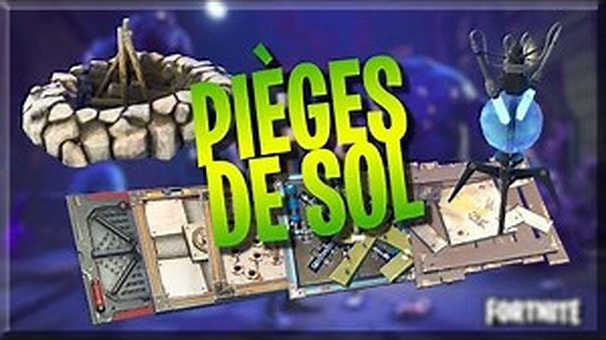

Fortnite
Sauver le monde
Présentation
Le jeu "Sauver le monde" est un jeu vidéo basé sur de la survie et de la construction en coopération.
Fortnite est composé d'un mode de jeu en joueur contre l'environnement (Sauver le monde) et joueur contre joueur qui se nomme "Fortnite Battle Royal".
Il est développé par la société polonaise "People Can Fly" et le studio américain "Epic Game". Réalisé par Darren Sugg, le jeux comptabilise un chiffre d'affaire de 1.8 milliard de dollars en 2019.
Trame du jeu
98% de la population du monde a soudainement disparu, et la population restante subit des conditions météorologiques difficiles.
Le ciel couvert de nuages denses, engendre des tempêtes chaotiques qui ont laissé tomber des carcasses, créatures humanoïdes zombies, qui attaquent les vivants.
Les survivants, appelés "les Fortnites" ont réussi à construire des champs magnétiques appelés "boucliers anti-tempêtes" pour percer les nuages et réduire les attaques.
Le joueur incarne un commandant Fortnite de l'une de ces bases, ayant pour mission d'explorer les contrées qui ne sont pas protégées par les champs magnétiques afin de trouver des ressources, des survivants et d'autres alliés pour aider à étendre les zones de protection apportées par les boucliers anti-tempête.

Il s'agit de trouver un moyen de sauver la Terre pour la ramener à son état normal.
Les créatures
Les joueurs rencontrent une variété de Carcasses tout au long de leur progression dans Sauver le Monde.
Dans sauver le monde, il existe 7 types de créatures très différentes les unes des autres
Les créatures les plus fréquentes sont les Carcasses classiques...
...et les Monstres de la Brume qui attaquent les joueurs avec différents comportements.

Petit à petit, votre niveau va augmenter et vous allez rencontrer des carcasses de plus en plus dure à éliminer comme la carcasse mastoc antiémeute avec son bouclier
Ou alors la carcasse "Cauchmar" qui apparait lors d'évênements
Les armes
Pour vous défendre lors de vos missions, le jeu vous met à disposition un arsenal qui vous pouvez améliorer au fur et à mesure du temps.
Au depart, vous obtenez un fusil d'assault ainsi qu' une arme de mêlée :

Avec les ressources et des défis que vous allez accomplir, vous allez débloquer des shémas d'armes, pour pouvoir les frabriquer par la suite autant que vous le voudrez
(Bien entendu si vous possedez les matériaux nécessaires).
Les pièges
Lors de missions, l'utilisation de piège est primordial
Vous pouvez vous en confectionner à l'aide de ressource que vous trouverez dans le monde.
Il y a différentes catégories de piège, il y a les piège muraux, piège de sols, et les pièges de plafonds
Pièges muraux :
Pièges de plafonds :
Pièges de sols :
